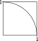
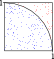

Quick Estimation of π - Solution #1
Consider one quadrant of a circle with its center at the origin and radius of 1:
The solution program will not draw the circle, but will operate within this field. Generate two random numbers between 0 and 1. These are the coordinates of a randomly chosen point in the field. Find the distance from the origin to the point, the radius. If the radius is less than one, add 1 to an integer variable 'inside'. If the radius is greater than one, add 1 to an integer variable 'outside'. Repeat these steps many times (>50 times).
Now, let's approximate the area of the circle as 4 times the fraction of points that landed inside the circle multiplied by the area of the box (A_box = 1). If we solve the area of a circle equation for π, then we get:
π ≈ [4*inside]/[(inside+outside)*r^2] or 4*inside/(inside+outside)